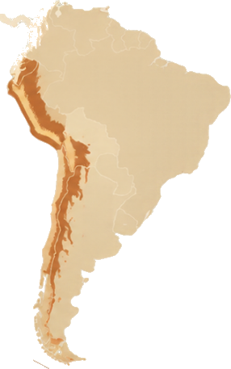

1. Quem são as Lhamas? Classificação Taxonômica
Integrantes da família Camelidae, compartilham ancestralidade comum com camelos e dromedários do Velho Mundo, porém integram a tribo exclusiva Lamini.
Classificação Científica Completa
Lineu, 1758Lama glama (Linnaeus, 1758)
* Nota Biológica: Tylopoda significa "pés almofadados": em vez de cascos, os camelídeos têm dedos com unhas apoiados sobre almofadas plantares macias. Algumas classificações tratam a ordem como Cetartiodactyla.
Ancestralidade & Domesticação
O guanaco foi domesticado nos Andes centrais do Peru. As estimativas variam de 4.000–5.000 a 6.000–7.000 anos atrás. A lhama tornou-se um animal de carga essencial, além de fornecer fibra e carne.
Estudos genéticos indicam que a alpaca descende da vicunha e deve ser classificada como Vicugna pacos. Houve, porém, hibridização entre as linhagens ao longo da história.
2. Diferenças entre os 4 Camelídeos Sul-Americanos
Como identificar com exatidão lhamas, alpacas, vicunhas e guanacos através do porte, orelhas, tipo de fibra e status ecológico (doméstico vs selvagem).
Lhama
Lama glama
Orelhas longas e curvadas em formato de banana. Focinho e pescoço longos e eretos.
1,0 m a 1,2 m na cernelha (cerca de 1,8 m até a cabeça). Peso de 130 kg a 200 kg. É o mais pesado e forte dos quatro.
Pelo grosso, densidade média. Grande variedade: branco, preto, castanho, bege, cinza e padrões malhados/manchados.
Animal de carga secular nos Andes, proteção de rebanho (guarda), lã rústica térmica, companhia e terapia.
Alpaca
Vicugna pacos
Orelhas curtas, mais simétricas e em forma de pera. Cerca de metade do tamanho da lhama.
Cerca de 0,9 m na cernelha. Peso entre 45 kg e 80 kg.
Fibra fina e sedosa, em cerca de 22 cores naturais. Dois tipos: Huacaya (fibra frisada e fofa) e Suri (mechas longas e sedosas).
Criada principalmente pela fibra fina; o animal de carga dos Andes é a lhama.
Vicunha
Vicugna vicugna
Padrão bicolor: castanho-claro no dorso e branco/creme no ventre. Incisivos com crescimento contínuo, como os de roedores.
O menor dos quatro. Peso de apenas 35 kg a 60 kg.
Uma das fibras animais mais finas (cerca de 12–14 µm) e valiosas: rende cerca de 250 g por animal a cada 2 anos. No Império Inca, era reservada ao imperador; hoje é obtida no Chaccu (captura, tosquia e soltura).
Punas andinas. Grupos familiares de 1 macho territorial, poucas fêmeas (em geral 3 a 4) e crias. Aparece no escudo nacional do Peru.
Guanaco
Lama guanicoe
Em média um pouco menor e mais leve que a lhama. Altura de 0,9 m a 1,3 m na cernelha e 90 a 140 kg.
Dorso castanho-claro, ventre branco e cabeça cinza. Como os demais camelídeos, tem muitas hemácias pequenas e elípticas, com hemoglobina de alta afinidade pelo oxigênio.
Do Deserto do Atacama à Terra do Fogo, cobrindo a Patagônia e os Andes até cerca de 4.300 m.
Vive em haréns (1 macho com 5 a 13 adultos) ou em bandos de machos solteiros (3 a 60). Ancestral direto da lhama.
| Espécie | Condição | Altura (cernelha) | Peso Adulto | Orelhas | Qualidade da Fibra | Uso Tradicional |
|---|---|---|---|---|---|---|
| Lhama | Doméstica | 1,00 m – 1,20 m | 130 – 200 kg | Longas e arqueadas ("banana") | Grossa / Rústica (térmica) | Carga, fibra, carne, guarda |
| Alpaca | Doméstica | ≈ 0,90 m | 45 – 80 kg | Curtas, em forma de pera | Fina e sedosa, ~22 cores | Fibra para vestuário fino |
| Vicunha | Selvagem | O menor dos 4 | 35 – 60 kg | — | Finíssima (~12–14 µm), muito valiosa | Protegida; tosquia no Chaccu |
| Guanaco | Selvagem | 0,90 m – 1,30 m | 90 – 140 kg | Longas e pontudas | Dupla pelagem | Fauna silvestre nativa |
3. Onde Vivem? Hábitat, Altiplanos e Baixo Impacto Ecológico
Integrando o infográfico original de distribuição geográfica e as adaptações ecofisiológicas que tornam a criação de lhamas um modelo de sustentabilidade.
Onde vivem?
- As lhamas são animais domesticados, criados há milhares de anos.
- Sua origem está na Cordilheira dos Andes, na América do Sul.
- Vivem em ambientes de altitude, frios e secos, com vegetação rasteira.


Argentina, Bolívia, Chile, Equador e Peru, onde é criada por pastores andinos. Por ser 100% doméstica, não existe lhama selvagem na natureza.
Corte com Almofada Dental
Corte com dentes incisivos inferiores e placa dura superiorOs incisivos inferiores cortam a vegetação contra a gengiva superior endurecida (almofada dental), em vez de arrancá-la com dentes superiores.
Coxim Plantar Macio (Sem Casco Rígido)
Menos compactação do solo que os cascosOs dedos das lhamas terminam em unhas sobre almofadas plantares macias, que danificam menos o solo e causam menos compactação do que os cascos de bovinos e equinos.
Água Sempre Disponível
Necessidade básica de manejoLhamas obtêm parte da umidade da própria forragem, mas animais criados precisam de acesso livre a água fresca e limpa.
Interações Ecológicas no Ecossistema de Altitude
Puna • acima de ~3.500 m de altitudeBactérias e protozoários dos compartimentos gástricos fermentam a fibra dura das plantas andinas, transformando-a em energia para o animal.
O puma (Puma concolor) é o principal predador dos camelídeos silvestres, e a raposa-culpeo ataca filhotes. Diante de predadores, emitem um chamado de alarme e podem enfrentá-los.
Defecam em montes comunitários (latrinas). No Peru, latrinas de lhamas em áreas deixadas por geleiras aumentaram o carbono e o nitrogênio do solo e a cobertura vegetal.
Sementes ingeridas são depositadas nas fezes. Num estudo no Peru, 5 das 12 espécies de sementes encontradas no esterco de lhama ainda germinavam.
Alpacas são mais seletivas e ligadas às áreas úmidas (bofedales); lhamas ocupam ambientes mais variados, comendo gramíneas, arbustos baixos e liquens.
Uma lhama mantida sozinha com ovelhas tende a protegê-las de canídeos, como cães e coiotes, perseguindo e escoiceando o invasor. Estudos mostram redução das perdas por predação.

Bofedales (áreas úmidas de altitude), em geral acima de 3.800 metros.
4. Comportamento, Nutrição Gástrica e Reprodução
Particularidades: ovulação induzida pela cópula, gestação de quase um ano, partos durante o dia e estômago com três compartimentos.
Digestão em 3 Compartimentos
Não homólogos aos 4 dos ruminantes: camelídeos não são ruminantesPrincipal câmara de fermentação microbiana. Tem sáculos glandulares que, segundo a hipótese mais aceita, ajudam a tamponar a fermentação; o mecanismo ainda é debatido.
Compartimento menor, também com sáculos glandulares, onde a fermentação continua. Os camelídeos regurgitam e remastigam o alimento, embora não sejam ruminantes.
Tubo alongado: a maior parte inicial continua a fermentação e absorve ácidos graxos voláteis, sódio e água; a porção final (cerca de 1/5) secreta ácido clorídrico, como o abomaso dos bovinos.
Cobre (Cu): camelídeos são sensíveis à intoxicação por cobre, num nível intermediário entre ovinos e bovinos. O cobre se acumula no fígado e pode causar lesão hepática grave e morte rápida. Não use sal mineral ou ração formulados para bovinos, nem some suplementos com cobre.
Ionóforos: monensina e salinomicina, aditivos comuns em rações de bovinos e aves, são altamente tóxicos para camelídeos e causam lesão no coração e nos músculos e morte súbita.
Reprodução & Ciclo Neonatal
Mecanismos adaptativos únicosDesencadeada pela cópula, por meio do fator β-NGF presente no plasma seminal.
342 ± 10 dias (cerca de 11,5 meses). Filhote único ("cria"); gêmeos são raríssimos.
A atividade ovariana começa aos 10–12 meses. Primeira cobertura a partir de 12 meses e 60% do peso adulto (o usual é 15–18 meses); fontes mais conservadoras recomendam após 24 meses.
Mais de 70% dos partos normais ocorrem pela manhã.
O filhote nasce com cerca de 9 a 15 kg e deve ingerir colostro (10–15% do peso corporal) nas primeiras 24 horas, de preferência até 12 horas, para receber os anticorpos da mãe. O desmame costuma ocorrer entre 4 e 6 meses.
5. Criação, Usos Zootécnicos e Manejo no Brasil
Por que criar lhamas? Da proteção de rebanhos de ovinos à terapia assistida e produção de fibra.
Cuidado que acompanha cada etapa
Nutrição equilibrada, água limpa e assistência veterinária são essenciais para a saúde das lhamas.
Do pasto aos primeiros dias de vida da cria, o manejo atento faz diferença.
O Papel da Lhama como Animal de Guarda
Lhamas são usadas para proteger ovelhas e cabras contra canídeos, como cães e coiotes. Ao perceber o predador, a lhama vocaliza alto, corre em sua direção e pode escoiceá-lo. Ela não dá conta, porém, de matilhas de cães nem de grandes predadores, como o puma.
- Vive e pasta junto com o rebanho.
- Reduz perdas por coiotes e cães, segundo estudos de campo.
- Vocaliza alto e persegue o predador.
Utiliza-se um único macho castrado (ou uma fêmea, com ou sem cria) por lote. Duas lhamas juntas socializam entre si e ignoram as ovelhas!
Lã & Artesanato Térmico
A maioria das fibras é medulada (com ar no interior), o que dá bom isolamento térmico. Mais grossa que a da alpaca, serve para ponchos, mantas, tapetes e cordas.
Pet Exótico & Terapia Assistida
Dóceis quando bem manejadas e higiênicas (urinam e defecam em montes comunitários). São usadas em terapia assistida por animais e em agroturismo. Atenção: filhotes criados na mamadeira podem se tornar perigosos na vida adulta.
Criação de Lhamas no Brasil
Já há lhamas criadas em cativeiro no Sul do Brasil. Em clima quente, precisam de sombra, água fresca e tosquia antes do período de calor, para evitar estresse térmico.
Perguntas Frequentes de Manejo e Instalações Rurais
Precisam de muito espaço? Pasto ou curral?
Em boa pastagem, até cerca de 4 lhamas por acre (≈ 10 por hectare). O número real depende da qualidade e da quantidade de forragem disponível.
Pode criar machos e fêmeas juntos?
Não de forma permanente. Machos inteiros e recém-castrados brigam muito quando há fêmeas por perto. O usual é manter fêmeas, machos castrados e machos reprodutores em lotes separados.
Como é feita a reprodução? Inseminação ou monta?
Predomina a monta natural controlada. A fêmea deita em posição de kush durante a cópula, que pode durar até cerca de 45 minutos. A inseminação artificial ainda é pouco difundida: o sêmen viscoso é o principal obstáculo, e a ovulação precisa ser induzida com hormônios. Em lhamas, já nasceram crias por inseminação com sêmen congelado.
Quanto uma lhama come?
Em geral, cerca de 1,8% a 2% do peso vivo em matéria seca por dia. A base da dieta é pasto ou feno de boa qualidade.
Por que as lhamas cospem?
O cuspe dos camelídeos é saliva, muitas vezes misturada com conteúdo do estômago. É usado sobretudo entre eles, nas disputas por comida e espaço, e por fêmeas que rejeitam o macho. Animais bem manejados raramente cospem em pessoas.
Referências
As informações deste guia foram conferidas em artigos científicos revisados por pares, manuais veterinários e publicações universitárias. Quando as fontes divergem, o texto apresenta a faixa de valores encontrada.
- Kadwell M. et al. (2001). Genetic analysis reveals the wild ancestors of the llama and the alpaca. Proc. R. Soc. B 268:2575–2584. pmc.ncbi.nlm.nih.gov
- Marín J.C. et al. (2007). Sistemática, taxonomía y domesticación de alpacas y llamas. Rev. Chil. Hist. Nat. 80:121–140. www.redalyc.org
- Yacobaccio H.D. (2021). The domestication of South American camelids: a review. Animal Frontiers 11(3). doi.org
- Westendorf M., Stahl T. (2024). Llamas and Alpacas (FS917). Rutgers Cooperative Extension. extension.rutgers.edu
- MSD Veterinary Manual. Llamas and Alpacas: Overview, Management, Herd Health, Reproduction. www.msdvetmanual.com
- Animal Diversity Web (Univ. Michigan). Lama glama, Lama guanicoe, Vicugna vicugna, Lama pacos. animaldiversity.org
- San Diego Zoo Wildlife Alliance Library. Guanaco Fact Sheet. ielc.libguides.com
- Quispe E.C. et al. (2009). Producción de fibra de alpaca, llama, vicuña y guanaco en Sudamérica. Animal Genetic Resources Information (FAO) 45:1–14. www.produccion-animal.com.ar
- Bonacic C., Gimpel J. Vicuña situation in Chile (fact sheet). Pontificia Universidad Católica de Chile. macaulay.webarchive.hutton.ac.uk
- Vilá B., Arzamendia Y. (2022). Weaving a vicuña shawl. Pastoralism 12:46. pmc.ncbi.nlm.nih.gov
- Maldonado Fonkén M.S. (2014). An introduction to the bofedales of the Peruvian High Andes. Mires and Peat 15:05. www.mires-and-peat.net
- Fowler M.E. (2008). Camelids are not ruminants. Zoo and Wild Animal Medicine, cap. 46. europepmc.org
- Cebra C. et al. (2014). Disorders of the Digestive System. Llama and Alpaca Care. Elsevier. europepmc.org
- Marahrens H. et al. (2024). Copper intoxication in South American camelids. Biol. Trace Elem. Res. 202:5453–5464. europepmc.org
- Zimmer A. et al. (2023). Llamas enhance proglacial ecosystem development in Cordillera Blanca, Peru. Sci. Rep. 13:15936. doi.org
- Paiva L. et al. (2022). The ovulatory and luteotropic actions of the male-derived β-NGF in South American camelids. Animal Frontiers 12(4):87–94. pmc.ncbi.nlm.nih.gov
- Morrell J.M., Abraham M.C. (2020). Semen handling in South American camelids: state of the art. Front. Vet. Sci. 7:586858. www.frontiersin.org
- Knowlton F.F., Meadows L.E. (2000). Efficacy of guard llamas to reduce canine predation on domestic sheep. Wildl. Soc. Bull. 28(3):614–622. digitalcommons.usu.edu
- Tornquist S.J. Hematology of camelids. Oregon State University / Alpaca Research Foundation. alpacaresearch.org
- Santos E.O. (2006). Perfil bioquímico-hematológico em lhamas criadas em cativeiro no sul do Brasil. Dissertação, UFRGS. lume.ufrgs.br